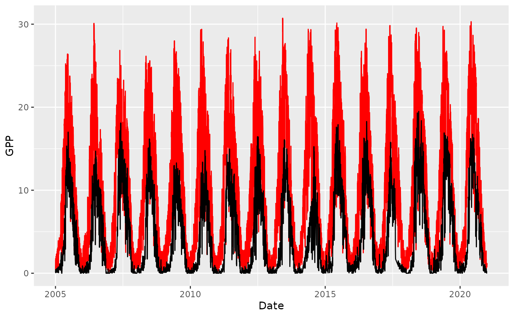

Data generation
Koen Hufkens
03_data_generation.RmdNote this routine will only run with the appropriate files in the correct place. Given the file sizes involved no demo data can be integrated into the package.
Compiling data
As mentioned in the introduction (once all required data are
downloaded) the FluxDataKit package ensures the proper
compilation of rsofun driver data. Although we will
distribute a finished dataset the below instructions allow you to
recreate these data for a particular site (or sites).
To generate consistent data from FLUXNET formatted sources we need a site list with some additional meta-data. A site list is generated using the script as described in the ‘data coverage’ vignette. We refer to this vignette to compile the list of sites which can be processed.
Once a site list has been compiled you can use it (and all the other
input data) to generated either land surface model or
rsofun compatible datasets. Here, the former is used as a
precursor to the latter.
LSM formatting
By default land surface model compatible data is generated using the
FluxnetLSM package. Retaining only this data can be done by specifying
the format parameter, and setting it to “lsm”. This routine
will only save the netcdf intermediates that are otherwise used for
formatting p-model compatible data and will not include any other
ancillary data.
Meta-data requirements: Note that the sites file can be generated by other means than the included script. It only has to contain the following values: A site name (
sitename), latitude and longitude (lat,lon), elevation (elv), the start and end date of the dataset (date_start/date_end), the original product and data path (productanddata_pathrespectivelly, which are combined into the formal data directory), a start and end year (year_start,year_end), the Koeppen Geiger code for a site (koeppen_code_beck), the water holding capacity (whc), and the IGBP land cover class (igbp_land_use). Routines specified in the processing scripts are there to make it easy to gather these data but users are free to compile additional data for their own use. The above fields are however required.
# load the sites to process
# as generated from scripts in `data-raw` (see github repo)
sites <- FluxDataKit::fdk_site_info |>
filter(
sitename == "FR-Fon"
) |>
mutate(
data_path = "/data/scratch/FDK_inputs/flux_data"
)
# output LSM formatted data
fdk_process_lsm(
sites,
out_path = "/data/scratch/PLUMBER_X/lsm/",
modis_path = "/data/scratch/FDK_inputs/modis",
format = "lsm",
overwrite = TRUE
)## -- processing site: FR-Fon## Converting fluxnet data to netcdf## Merging in MODIS LAI/FPAR data## writing MODIS data to netcdf file
## writing MODIS data to netcdf file## applying ERA corrections## applying FLUX corrections## converting as LSM netcdf## saving data in your output directory
# list generated files
list.files("/data/scratch/PLUMBER_X/lsm/",glob2rx("*FR-Fon*.nc"), recursive = TRUE)## [1] "FR-Fon_2005-2020_FLUXNET2015_Flux.nc"
## [2] "FR-Fon_2005-2020_FLUXNET2015_Met.nc"FLUXNET formatting
By default the format parameter is set to “lsm”, providing land
surface model netcdf files as output. You can specify “fluxnet” to
convert the data to rsofun compatible FLXUNET output.
# read in demo data
# for FR-Fon site (as LSM data)
# convert to the HH fluxnet format
fluxnet <- fdk_convert_lsm(
site = "FR-Fon",
path = "/data/scratch/PLUMBER_X/lsm/",
fluxnet_format = TRUE,
out_path = "/data/scratch/PLUMBER_X/fluxnet/"
)## ---> writing data to file:## /data/scratch/PLUMBER_X/fluxnet//FLX_FR-Fon_PLUMBER_FULLSET_HH_2005_2020_2-3.csvPlotting conversion results
You can plot conversion results to quickly inspect the results. Here
we retain the data in its original FLUXNET formatting and output the
gapfilled and amended data as a data frame. This data frame is input to
the plotting routine fdk_plot, which returns an overview
plot to the specified out_path directory.
# Read in and convert the data
df <- fluxnet <- fdk_convert_lsm(
site = "FR-Fon",
path = "/data/scratch/PLUMBER_X/lsm/",
fluxnet_format = TRUE
)
# plot the returned data frame
# as a file
fdk_plot(
df,
site = "FR-Fon", # for writing things to file
out_path = tempdir(),
overwrite = TRUE
)## Warning: Removed 1730271 rows containing missing values (geom_point).Conversions to daily FLUXNET data (downsampling)
Fluxnet data processed to netcdf files can be converted back to FLUXNET CSV based files, with the same column naming conventions as the original files. Data however is downsampled to a daily time step, and additional variables and gap filling is retained from the above LSM based product.
It must be noted that the these daily products, although adhering to the FLUXNET naming conventions (both in filename and column names), are not equivalent to the data generated by the OneFlux processing pipeline.
# Downsample data
fdk_downsample_fluxnet(
df,
site = "FR-Fon", # a site name
out_path = tempdir(),
overwrite = TRUE
)## ---> writing data to file:## /tmp/RtmpdlGcnV/FLX_FR-Fon_PLUMBER_FULLSET_DD_2005_2020_2-3.csvp-model (rsofun) and Machine Learning formatting
In addition, MODIS data can be merged from the FluxnetEO dataset using the R package with the same name. The latter ensures that rsofun driver (and target) data are ammended with MODIS data for, among others, machine learning projects.
# processing of the half hourly data to
# p-model input drivers for rsofun
rsofun_data <- fdk_format_drivers(
site_info = FluxDataKit::fdk_site_info |>
filter(sitename == "FR-Fon"),
path = paste0(tempdir(),"/"),
freq = "d",
verbose = TRUE
)## Processing WHC data ....## Processing FLUX data ....## processing flux data using {ingestr}## Not all getvars were found in file. Missing variable: WS, NEE_VUT_REF_NIGHT_QC, NEE_VUT_REF_DAY_QC, NEE_VUT_REF_QC for site: FR-Fon## Processing CRU data ....## Merging climate data ....## Append CO2 data ....## Append FAPAR data ....## Combining all driver data ....
# optimized parameters from previous work
params_modl <- list(
kphio = 0.09423773,
soilm_par_a = 0.33349283,
soilm_par_b = 1.45602286,
tau_acclim_tempstress = 10,
par_shape_tempstress = 0.0
)
# run the model for these parameters
output <- rsofun::runread_pmodel_f(
rsofun_data,
par = params_modl
)
# we only have one site so we'll unnest
# the main model output
model_data <- output$data[[1]][[1]]
print(head(model_data))## date year_dec fapar gpp transp latenth pet
## 1 2005-01-01 2005.000 0.2936641 0.4190108 0.7635846 3468006 0.7635844
## 2 2005-01-02 2005.003 0.2932138 1.5659870 0.7120675 3438895 0.7120678
## 3 2005-01-03 2005.005 0.2935610 1.4196699 0.6456459 3395898 0.6456460
## 4 2005-01-04 2005.008 0.2946054 1.7752271 0.6362906 3417012 0.6362907
## 5 2005-01-05 2005.011 0.2962466 0.2553981 0.7447497 3566442 0.7447498
## 6 2005-01-06 2005.014 0.2983840 0.8328077 0.7982504 3658101 0.7982503
## vcmax jmax vcmax25 jmax25 gs_accl wscal
## 1 9.653893e-06 3.488994e-05 3.918076e-05 9.588948e-05 0.004303927 0.4688719
## 2 8.107640e-06 3.031156e-05 3.924208e-05 9.593666e-05 0.004303283 0.4721616
## 3 6.590229e-06 2.546328e-05 3.934967e-05 9.627092e-05 0.004322746 0.4735647
## 4 6.375983e-06 2.478456e-05 3.985013e-05 9.757713e-05 0.004336617 0.4749424
## 5 8.148953e-06 3.037763e-05 3.854798e-05 9.436194e-05 0.004372484 0.4871338
## 6 9.050937e-06 3.287423e-05 3.774421e-05 9.230203e-05 0.004403455 0.4892372
## chi iwue rd
## 1 0.6973364 7.187860e-05 0.04474467
## 2 0.6976710 7.179914e-05 0.03662378
## 3 0.6990151 7.147994e-05 0.02829848
## 4 0.6998749 7.127575e-05 0.02704896
## 5 0.7025284 7.064558e-05 0.03734032
## 6 0.7050596 7.004444e-05 0.04250450
validation_data <- rsofun_data |>
filter(sitename == "FR-Fon") |>
tidyr::unnest(forcing)
p <- ggplot() +
geom_line(
data = model_data,
aes(
date,
gpp
),
colour = "red"
) +
geom_line(
data = validation_data,
aes(
date,
gpp
)
) +
labs(
x = "Date",
y = "GPP"
)
print(p)